Where will U go
10 ອັນດັບສະຖານທີທ່ອງທ່ຽວຍອດຮິດຂອງລາວ
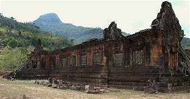
ວັດພູຈຳປາສັກ
ວັດພູ ເປັນບູຮານສະຖານສໍາຄັນຂອງລາວ ທີ່ສ້າງໃນສະຕະວັດ 12 ໃນສະໄໝ ພະເຈົ້າໄຊວໍລະມັນ ເປັນພະສາດທີ່ຕັ້ງຢູ່ເນີນພູມີຄວວາມສວຍງາມໜ້າຫຼົງໄຫຼແລະອັັດສະຈັນ ໃນສິລະປະສີມືການກໍ່ສ້າງຂອງຄົນໃນສະໄໝກ່ອນ
ປະຈຸບັນ ວັດພູເປັນແຫຼ່ງທ່ອງທ່ຽວທີ່ມີຊື່ສຽງອີກແຫຼ່ງ1ຂອງແຂວງຈຳປາສັກ ແລະ ໄດ້ຂື້ນທະບຽນເປັນມໍລະດົກໂລກແຫ່ງທີ່2ຂອງລາວຈາກ ອົງການ ຢູເນັສໂກ (UNESCO) ເມື່ອປີ 2001
ຊຶ່ງຮວມເອົາທັງວັດເມືອງກາງ ໃນເຂດເມືອງຈຳປາສັກເຂົ້າເປັນມໍຣະດົກໂລກນຳດ້ວຍ ວັດພູຈະມີການຈັດງານສະເຫຼີມສະຫຼອງໃນວັນເພງເດືອນ3
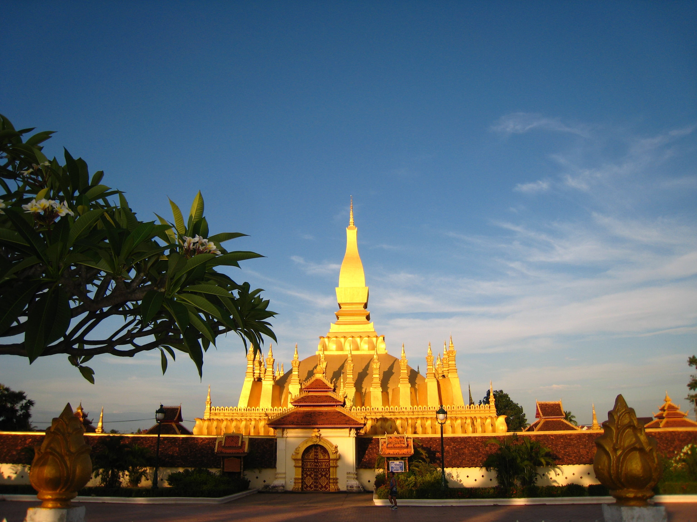
ພະທາດຫຼວງ ນະຄອນຫຼວງວຽງຈັນ
ພະທາດຫຼວງ ເປັນສະຖານທີ່ບູຮານສັກສິດແລະຖືວ່າເປັັນສັນຍາລັກຂອງປະເທດລາວ ທີ່ສ້າງຂຶ້ນໃນສະໄໝພະເຈົ້າ ໄຊຍະເສດຖາທິລາດ ແລະ ໄດ້ຮັບການບູລະນະຜ່ານຫຼາຍຍຸກຫຼາຍສະໄໝຈຶ່ງມີຮູບຮ່າງຄືປັດຈຸບັນ ທາດຫຼວງ ເປັນສູນລວມຈິດໃຈຂອງຊາວລາວທັງຊາດ ໃນແຕ່ລະປີ ມີນັກທ່ອງທ່ຽວພາຍໃນແລະຕ່າງປະເທດເຂົ້າມາຢ້ຽມຢາມຢ່າງຫຼວງຫຼາຍ
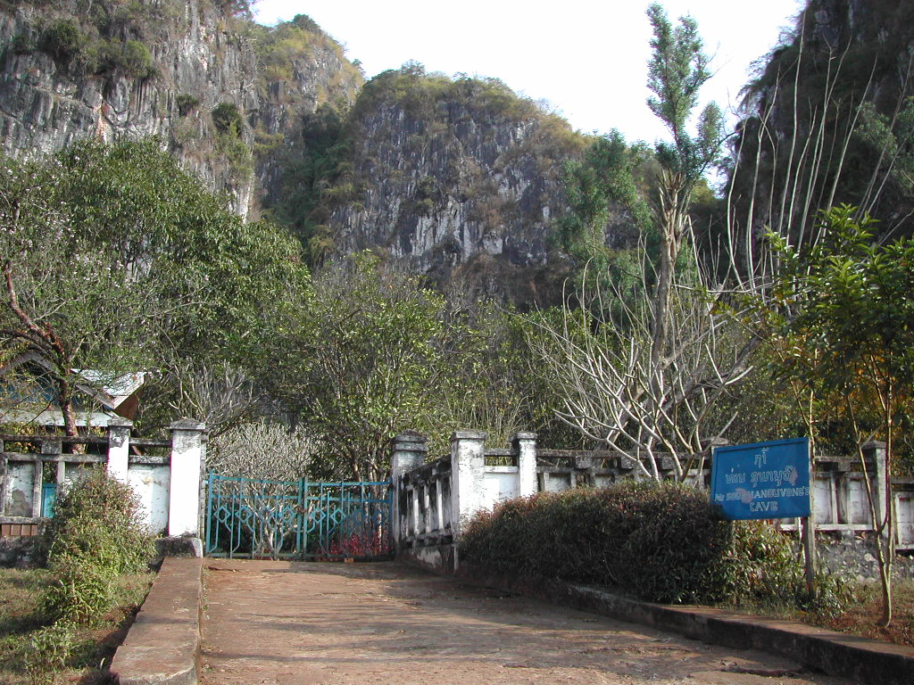
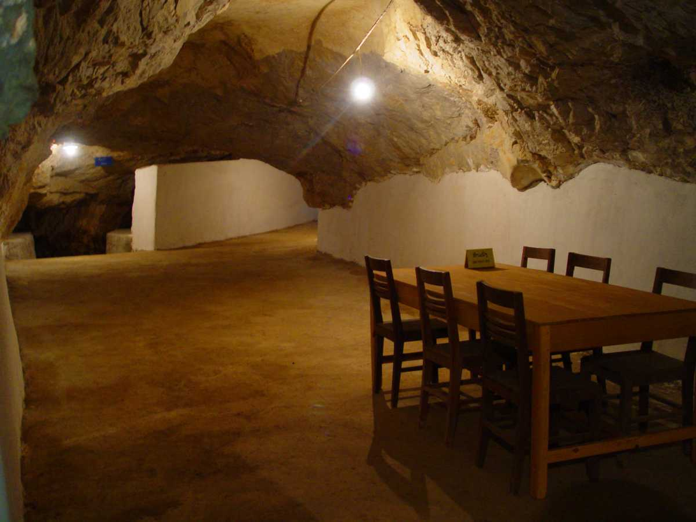
ເມືອງ ວຽງໄຊ ແຂວງ ຫົວພັນ
ເມືອງ ວຽງໄຊ ເປັນເມືອງທີ່ໝັ້ນຂອງການປະຕິວັດຕໍ່ສູ້ປົດປ່ອຍຊາດຂອງບັນດາທ່ານຜູ້ນຳແລະປະຊາຊົນບັນດາເຜົາ ມີແຫຼ່ງທ່ອງທ່ຽວຖ້ຳປະວັດຊາດບັນດາທ່ານຜູ້ນຳທີ່ໃຫ້ເຮົາໄດ້ສຶກສາຄົ້ນຄວ້າເຖິງຮ່ອງຮອຍການຕໍ່ສູ້ກູ້ຊາດໃນສະໄໝກ່ອນ ແລະ ຮ່ອງຮອຍຂອງການດຳລົງຊີວິດຢູ່ໃນຖ້ຳຂອງບັນດາທ່ານຜູ້ນຳທ່ານຕ່າງໆ ວຽງໄຊຖືເປັນແຫຼ່ງກຳເນີດ ສ.ປ.ປ ລາວອີກດ້ວຍ

ທົ່ງໄຫຫີນ ແຂວງ ຊຽງຂວາງ
ທົ່ງໄຫຫີນ ເປັນສະຖານທີ່ທ່ອງທ່ຽວທທາງປະຫວັດສາດແລະວັດທະນາທຳທີ່ສຳຄັນຂອງລາວ ເຊິ່ງປະກອບດ້ວຍໄຫຫີນໜ່ວຍໜ້ອຍ,ໃຫຍ່ ຫຼາຍຮ້ອຍໜ່ວຍແຈກຢ້າຍກັນຢູ່ຕາມເນີນພູທີ່ສວຍສົດງົດງາມ ສັນນິຖານວ່າອາດຈະຖືກສ້າງຂື້ນໃນສະໄໝຂຸນເຈືອງ ເຊິ່ງໃຊ່້ເປັນບ່ອນຝັງສົບຂອງຄົນໃນສະໄໝກ່ອນ ທົ່ງໄຫຫີນ ມີນັກທ່ອງທ່ຽວພາຍໃນແລະຕ່າງປະເທດເຂົ້າມາຢ້ຽມຢາມຢ່າງຫຼວງຫຼາຍ ແລະ ຫຼ້າສຸດທົງໄຫຫີນຖືກຮັບຮອງເປັນມໍລະດົກໂລກຢ່າງເປັນທາງການ ໃນວັນທີ 6 ເດືອນ ກໍລະກົດ ປີ 2019 ນີ້

ເມືອງ ປາກແບງ ແຂວງ ອຸດົມໄຊ
ເມືອງ ປາກແບງ ເປັນເມືອງທ່ອງທ່ຽວແຫ່ງໃໝ່ທີ່ກຳລັງເປັນທີ່ຮູ້ຈັກແລະໄດຮັບຄວາມນິຍົມ ຈາກນັກທ່ອງທ່ຽວ ປາກແບງ ເປັນເມືອງນ້ອຍໆຕັ້ງຢູ່ພູລຽບແມ່ນ້ຳຂອງ ແລະ ແມ່ນ້ຳແບງ ເປັນເມືອງທ່າເຮືອທີ່ມີມົນສະເໜ່ ດຶງດູດນັກທ່ອງທ່ຽວໃຫ້ມາທ່ຽວຊົມເພາະມີທີວທັດສວຍງາມໜ້າຫຼົງໄຫຼ ປາກແບງ ຍັງມີໂຮງແຮມແລະຣີສອດສລະດັບ5ດາວໄວ້ບໍລິການໃຫ້ແກ່ນັກທ່ອງທ່ຽວນຳອີກ
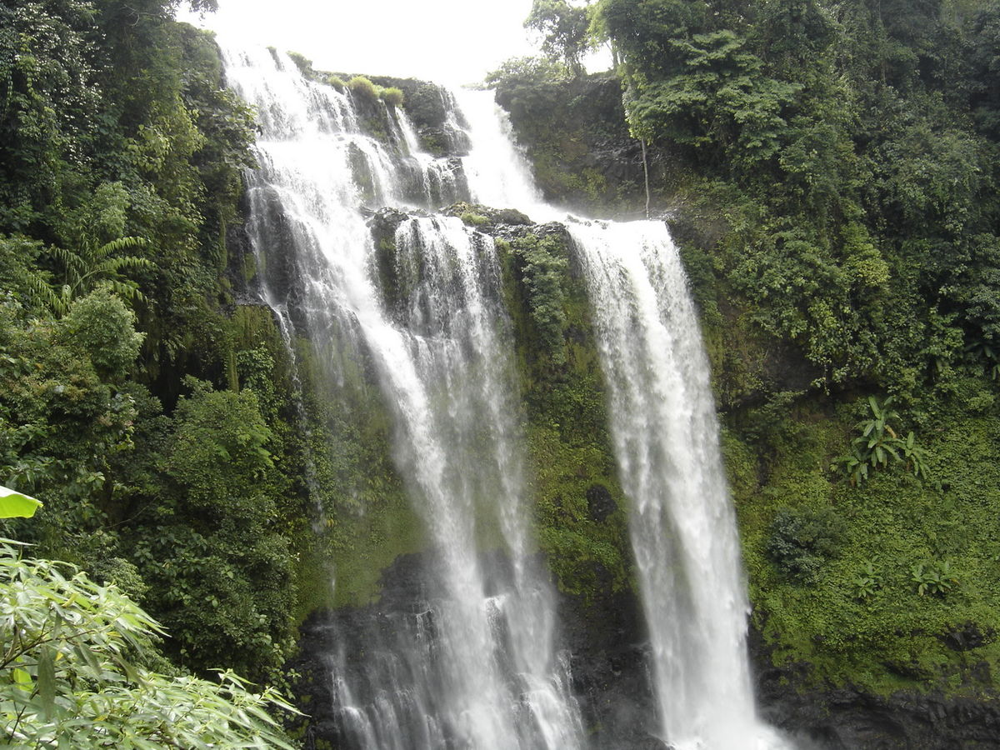

ເມືອງ ປາກຊອງ ແຂວງ ຈຳປາກສັກ
ເມືອງ ປາກຊອງ ເປັນເມືອງທີມີຊື່ສຽງທາງດ້ານການທ່ອງທ່ຽວອີກແຫ່ງ1ຂອງລາວ ທີ່ມີຈຸດພິເສດແຕກຕ່າງຈາກທີ່ອຶ່ນ ເພາະວ່າຕັ້ງຢູ່ໃນພູພຽງທີ່ມີອາກາດໜາວເຢັນຕະຫຼອດປີເໝາະແກ່ກາານຜະລິດກະສີກຳຂອງປະຊາຊົນ ເປັນຕົ້ນແມ່ນການປູຫກາເຟ ປາກຊອງ ມີຫຼາຍແຫຼ່ງທ່ອງທ່ຽວທີ່ໜ້າສົນໃຈໂດຍສະເພາະບັນດານ້ຳຕົກຕາດຕ່າງໆເຊັ່ນ:ນ້ຳຕົກຕາດຟານ,ຕາດເຍືອງ,ຕາດອີຕູ້ແລະອື່ນໆເຊິ່ງແຕ່ລະສະຖານທີກໍມີໂຮງແຮມແລະຣີສອດສໄວ້ບໍລິການອີກດ້ວຍ

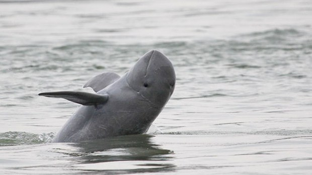

ເມືອງ ໂຂງ ແຂວງ ຈຳປາກສັກ
ເມືອງ ໂຂງ ເປັນເມືອງທີ່ຕັ້ງຢູ່ໃຕ້ສຸດຂອງປະເທດລາວເປັນທີ່ຕັ້ງຂອງມະຫານະທີສີພັນດອນ ເພາະມີເກາະດອນຫຼາຍກວ່າ4ພັນເກາະ ເປັນທີ່ດຶງດູດຈິດໃຈໃຫ້ນັກທ່ອງທ່ຽວເຂົ້າມາທ່ຽວຊົມໃນສະຖານທີ່ແຫ່ງນີ້ເປັນຈຳນວນຫຼວງຫຼາຍໃນແຕ່ລະປີ ຍ້ອນມີການດຳລົງຊີວິດທີ່ໜ້າສົນໃຈຂອງປະຊາຊົນໂດຍສະເພາະການຫາປາຕາມລຳແມ່ນ້ຳຂອງ ສະຖານທີ່ແຫ່ງນີ້ຍັງເປັນທີ່ອາໄສຂອງປາຂ່າ(ໂລມານ້ຳຈືດ)ເຊິ່ງເປັນສັດຫ່ວງຫ້າມແລະໃກ້ຈະສູນພັໍນຊຶ່ງຈະປະກົດໃຫ້ນັກທ່ອງທ່ຽວເຫັນເປັນບາງໄລຍະແລະມີນ້ຳຕົກຕາດຄອນພະເພັງເຊິ່ງເປັນນ້ຳຕົກຕາດທີ່ໃຫຍ່ສຸດໃນອາຊຽນອີກດ້ວຍ

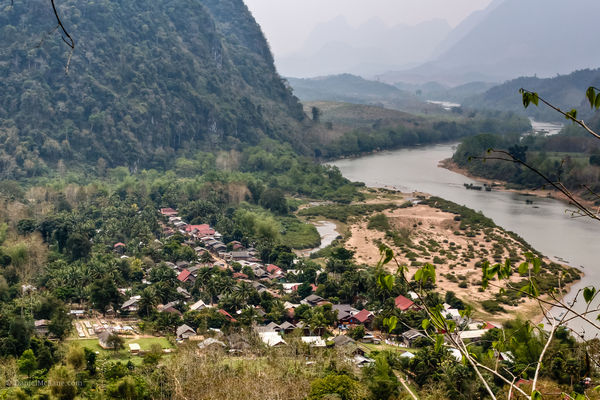
ເມືອງ ງອຍ ແຂວງ ຫຼວງພະບາງ
ເມືອງ ງອຍ ເປັນເມືອງທີ່ກຳລັງໄດຮັບຄວາມນິຍົມຈາກນັກທ່ອງທ່ຽວເພາະເປັນເມືອງມີທັດສະນີຍະພາບທີ່ສວຍສົດງົດງາມ ຂອງບັນດາໜ່ວຍພູລຽບຕາມແຄມແມ່ນ້ຳອູ່ ເໝາະແກ່ການລ່ອງເຮືອຊົມທຳມະຊາດ ແລະວິຖີຊີວິດຂອງປະຊາຊົນທັງສອງຝັ່ງ ໃນແຕ່ລະປີມີນັກທ່ອງທ່ຽວເຂົ້າໄປຢ້ຽມຊົມເມືອງແຫ່ງນີີ້ເປັນຈຳນວນຫຼວງຫຼາຍ ເຊິ່ງມີຫຼາຍກິດຈະກຳໃຫ້ນັກທ່ອງທ່ຽວໄດເຮັດເຊັ່ນ:ການລ່ອງເຮືອແລະການຍ່າງປ່າເປັນຕົ້ນ


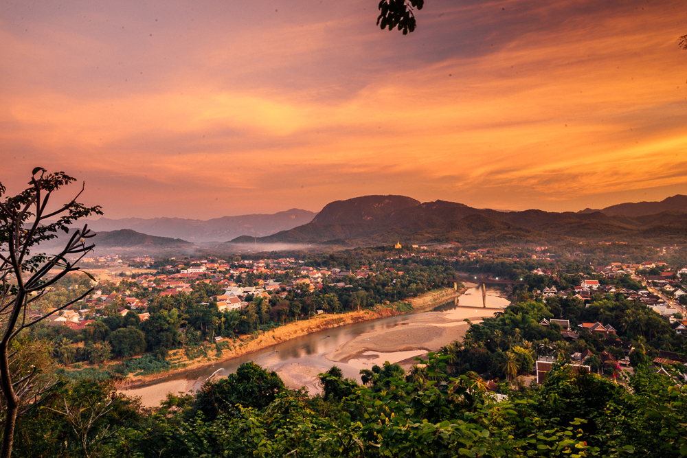
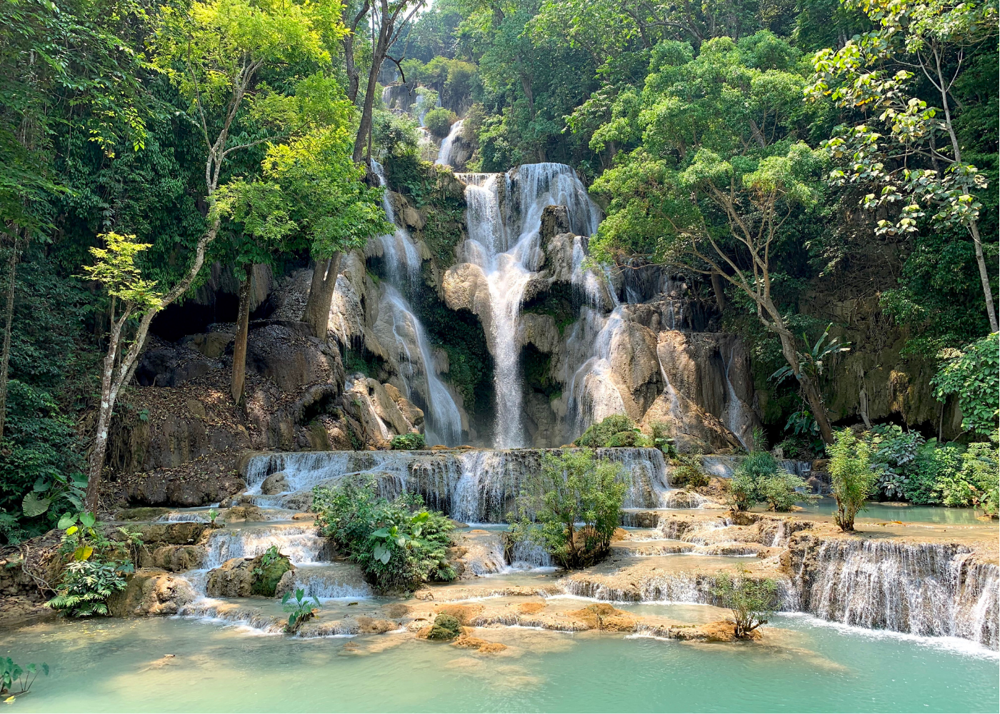
ເມືອງ ຫຼວງພະບາງ ແຂວງ ຫຼວງພະບາງ
ເມືອງ ຫຼວງພະບາງ ເປັນເມືອງລະດົກໂລກແຫ່ງທຳອິດຂອງ ສ.ປ.ປ ລາວ ເຊິ່ງຖືກຮັບຮອງຈາກອົງການ ຢູເນັສໂກ (UNESCO) ໃນປີ 1995 ເປັນເມືອງທີ່ເກົ່າແກ່ທີ່ມີສະຖາປັດຕະຍາກຳບບ້ານເຮືຶອນແບບລ້ານຊ້າງທີ່ຍັງຄົງຮັກສາໄວ້ ໃຫ້ນັກທ່ອງທ່ຽວໄດ້ສຳພັດກັບກິ່ນອາຍຂອງຄວາມເປັນລາວໃນອະດີດ ຫຼວງພະບາງມີຫຼາຍສະຖານທີໜ້າສົນໃຈໃຫ້ນັກທ່ອງໄດ້ທ່ຽວຊົມເຊັ່ນ:ວັດຊຽງທອງ,ວັດວິສູນນະລາດ,ຫໍພະບາງ,ພະລາດສະວັງເກົ່າ,ພະທາດຈອມສີ,ນ້ຳຕົກຕາດກວ້າງຊີ,ຖ້ຳຕິ່ງແລະອຶ່ນໆພ້ອມນັ້ນຫຼວງພະບາງຍັງມີອາຫານທີເປັນເອກະລັກທ້ອງຖິ່ນເຊັ່ນ:ເອາະຫຼາມ,ໄຄ່ແຜ່ນ,ໄສ້ອົ່ວ,ເຂົ້າຊອຍແລະອຶ່ນໆໄວ້ໃຫ້ນັກທ່ອງທ່ຽວໄດ້ຊິ່ມລົດຊາດ
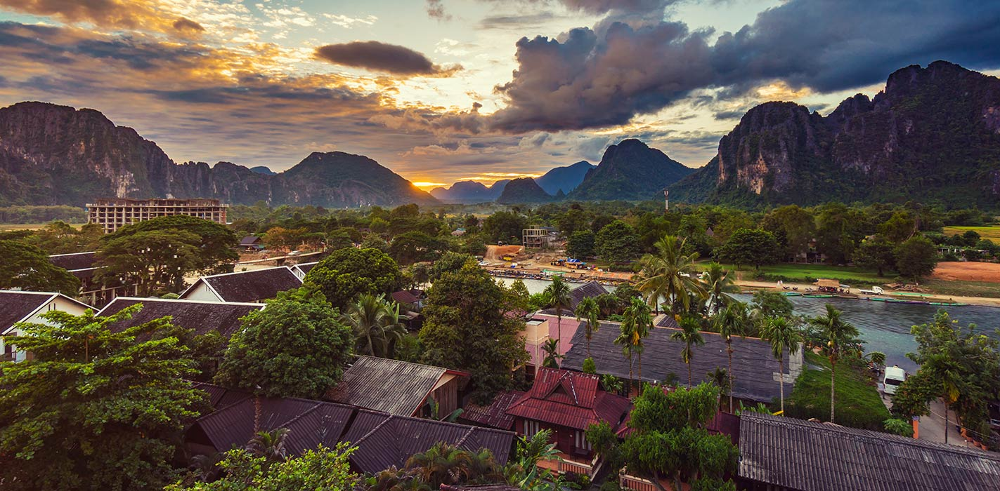
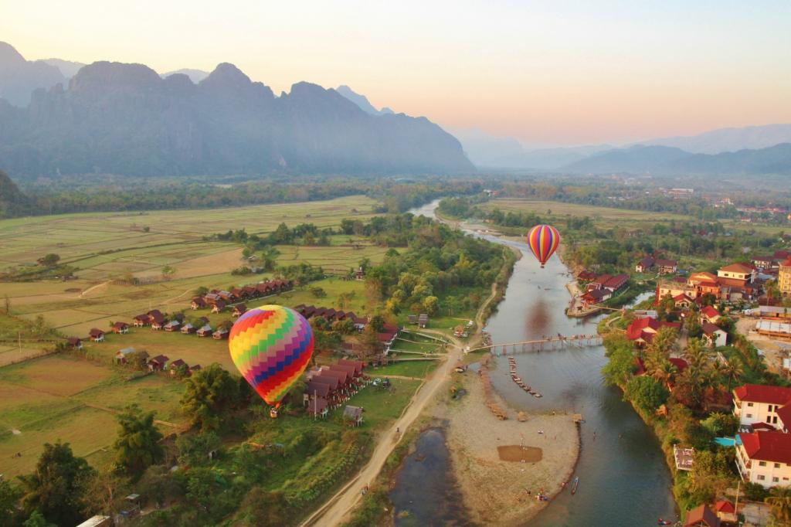
.jpg)
ເມືອງ ວັງວຽງ ແຂວງ ວຽງຈັນ
ເມືອງ ວັງວຽງ ເປັນເມືອງທ່ອງທ່ຽວຍອດຮິດອັນດັບ1ຂອງປະເທດລາວທີ່ມີນັກທ່ອງທ່ຽວສົນໃຈຫຼາຍທີ່ສຸດ ເພາະເປັນເມືອງທີ່ມີທິວທັດທີ່ສວຍງາມຈົນໄດ້ສາຍາວ່າ ອຸຍຫຼິນແຫ່ງເມືອງລາວ ພ້ອມນີ້ຍັງມີພູຜາຫີນປູນຕັ້ງລຽນລາຍເປັນສະລັບຊັບຊ້ອນກັນຢ່າງງົດງາມ ລຽບຕາມແຄມແມ່ນ້ຳຊ່ອງ ວັງວຽງມີຫຼາຍກິດຈະກຳເພື່ອດຶງດູດນັກທ່ອງທ່ຽວເຊັ່ນ: ການຂີ່ ບອນລູນ ຊົມຕົວເມືອງ,ການຂີ່ເຮືອລ່ອງແມ່ນ້ຳຊອງ,ການຂີ່ສະລິ່ງແລະອຶ່ນໆ ພ້ອມນັ້ນວັງວຽງ ຍັງມີໂຮງແຮມແລະຣີສອດສລະດັບ5ດາວໄວ້ບໍລິການໃຫ້ແກ່ນັກທ່ອງທ່ຽວນຳອີກ